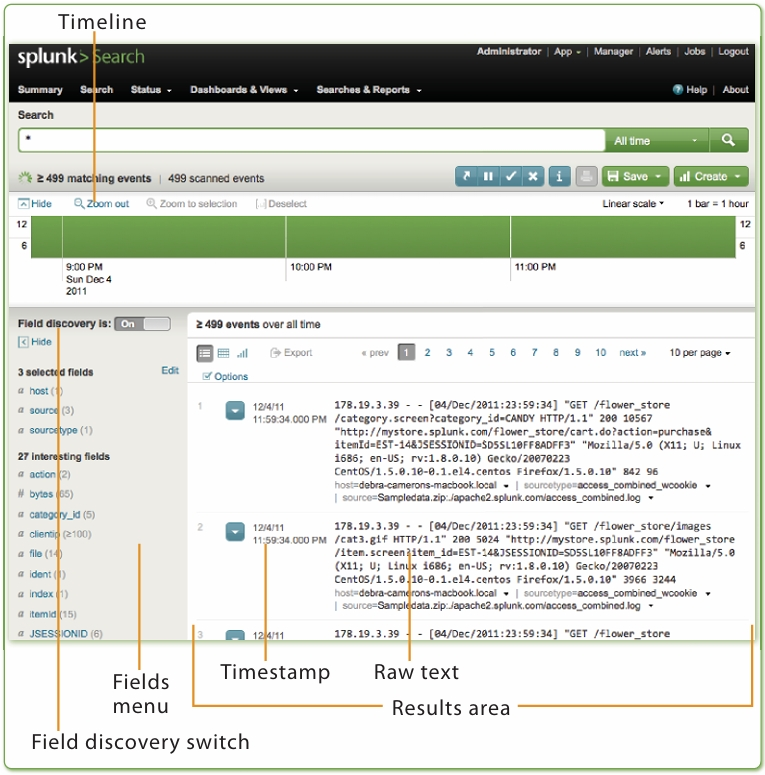

事件应急响应专家（四）
什么是Splunk
上一篇文章事件应急响应专家（三）
已经提到过了Splunk这个工具，是SIEM工具。
它是一个分析机器数据的平台。
它是安全运营人员快速搜索日志，分析安全事件的得力帮手。
Splunk最重要的就是SPL, 搜索处理语言。SPL对于大数据处理十分有效。
当你使用Splunk回答问题时，你会发现你可以打破任务分为三个阶段。
•首先，确定可以回答您问题的数据。
•其次，将数据转换为能够回答您的问题的结果问题
•第三，在报告、交互式图表或图形中显示答案，以使其为广大观众所理解。
从你想回答的问题开始：为什么那个系统失败了？为什么最近这么慢？人们在哪里对我们的网络有问题
地点掌握Splunk后，什么类型的数据会变得更加明显搜索有助于回答这些问题。这本书将加速你进步到精通。
SPLUNK的历史
Splunk的第一版发布于2005年。创始人希望机器日志的检索能和google搜索一样方便。
splunk这个名字起源于spelunking洞穴探险活动。splunk并不是一个英语单词，而是一个公司和工具的名字。
第一版发布以来，Splunk就大受欢迎。
Splunk被使用的第一个地方，就是数据中心。
Splunk的关键优点：
- 作为各种源数据的存储中心
- 将数据转化为答案
- 帮助你梳理结构、数据的意义
- 可视化，转化为图表和报告
Splunk的数据
可以读取的数据类型：
Splunk只有文本类型可以读取，二进制数据不可以读取。
Splunk的数据源：
- 文件
- 网络
- 脚本输入
下载、安装、启动Splunk
跳过
添加数据
- From the Welcome screen, click Add Data.
- Click From files and directories on the bottom half of the screen.
- Select Skip preview.
- Click the radio button next to Upload and index a file.
- Select the file you downloaded to your desktop.
- Click Save
- 在欢迎屏幕中，单击添加数据。
- 单击屏幕下半部分的“从文件和目录”。
- 选择跳过预览。
- 单击“上传文件并索引”旁边的单选按钮。
- 选择您下载到桌面的文件。
- 点击保存
理解Splunk是如何索引数据的
最开始的数据，被称之为元数据raw data。
Splunk在检索数据之前，必须对数据进行索引。
在书籍中，所以被称之为页数pages；而在Splunk中，索引被称之为事件events
Splunk把不同的机器数据，分成不同的事件。一个Events，可以是一行日志或一个复杂的包含几百行的数据集。
每一个事件，在Splunk中都至少有四个Field领域。
- Source 2. Sourcetype 3. host 4. _time
使用Splunk搜索
搜索的目标，是为了帮助你找到你需要的。这意味着对于数据的过滤、总结、可视化
首先我们要知道Summany控制面板。
总结就是我们现在的处境。
•“搜索”将指向主搜索界面“搜索”面板。
•状态列出了有关Splunk实例状态的仪表板。
•仪表板和视图列出了您的仪表板和看法。
•搜索和报告列出了您保存的搜索和报告。
下一节将向您介绍“搜索”面板
搜索功能的参数

让我们检查一下这个面板的内容：
• Timeline时间轴：匹配事件数量的图形表示随着时间的推移，你的搜索会越来越频繁。
• Field sidebar字段侧栏：相关字段以及事件计数。此菜单还允许您向结果中添加一个字段。
• Field discovery switch字段查找开关：打开或关闭自动字段查找。
当Splunk执行搜索并且字段发现打开时，Splunk尝试自动识别当前搜索的字段。
• Results area结果区域：显示搜索中的事件。事件已排序
按时间戳显示，时间戳显示在每个事件的左侧。在下面
每个事件的原始文本是从字段侧选择的任何字段
事件具有值的栏。
搜索处理语言SPL( Search Processing Language)
搜索处理语言SPL（Search Processing Language）是一种用于构建和执行搜索查询的领域特定语言。它通常用于搜索引擎或搜索服务中，用于描述用户的搜索请求以及如何从数据源中检索相关信息。以下是关于搜索处理语言SPL的一些基本信息：
用途：SPL被设计用来简化和优化搜索查询的构建过程。它可以提供更高层次的抽象，使得开发人员可以更方便地定义复杂的搜索逻辑和过滤条件。
特点：SPL通常具有专门的语法和语义，用于处理搜索请求中的关键词、逻辑运算、筛选条件等。它可以支持各种搜索引擎的功能，例如全文搜索、过滤、排序、聚合等。
实现：不同的搜索引擎和搜索服务可能有不同的SPL实现和语法规范。例如，Elasticsearch使用的查询语言就是一种SPL，被称为Elasticsearch Query DSL。
优势：使用SPL可以提高开发效率和搜索性能，因为它允许开发人员专注于搜索逻辑的描述，而不必关注底层的数据访问和操作细节。
参考资料
《Exploring Splunk》